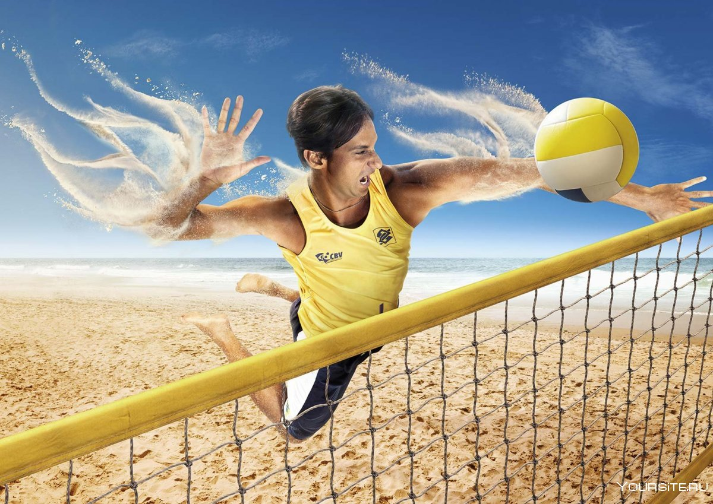
1. В каком году и в какой стране начал развиваться волейбол?
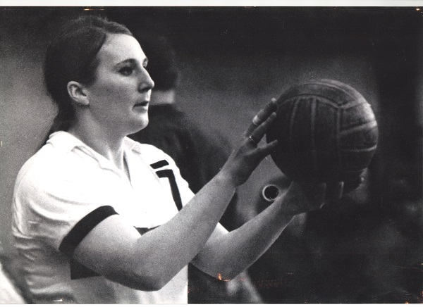
2. Назовите волейболистку, которая завоевала наибольшее количество наград в этом виде спорта?
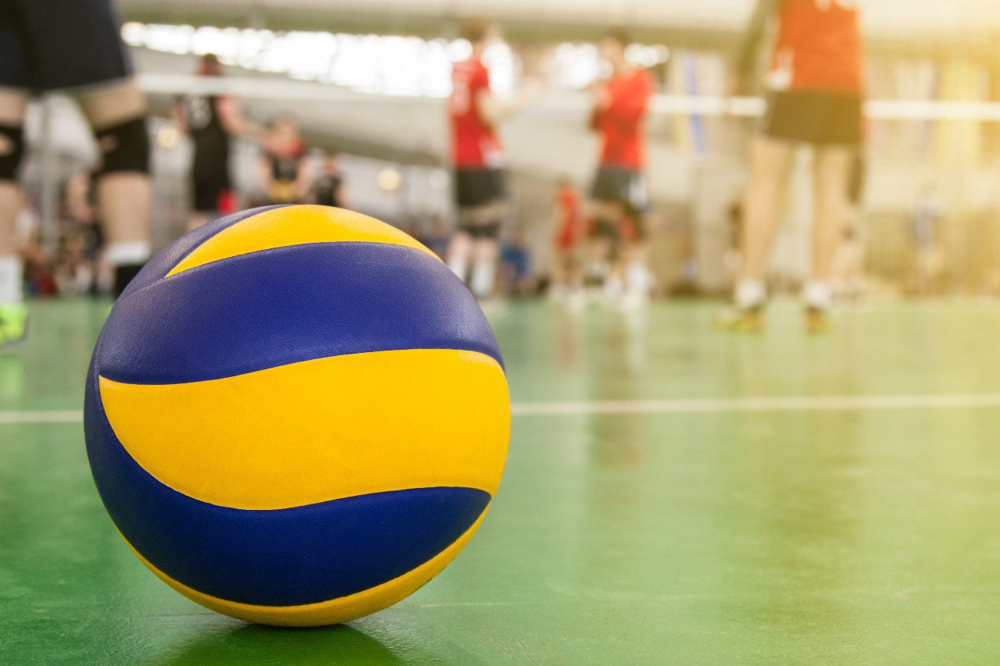
3. Сколько команд и сколько человек принимают участие в игре в волейбол?
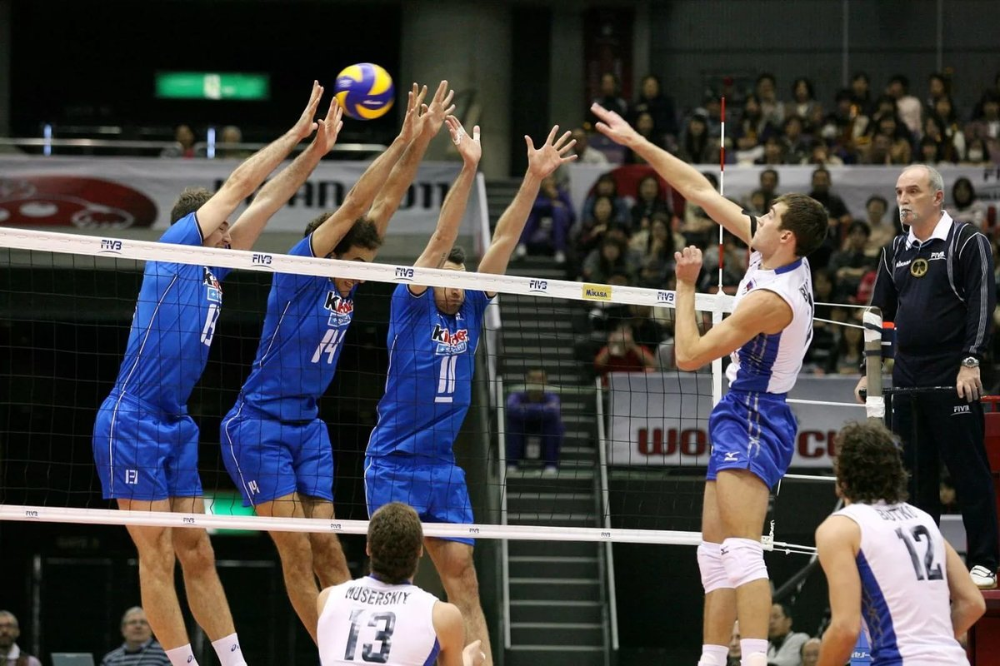
4. Расположение игроков на площадке?
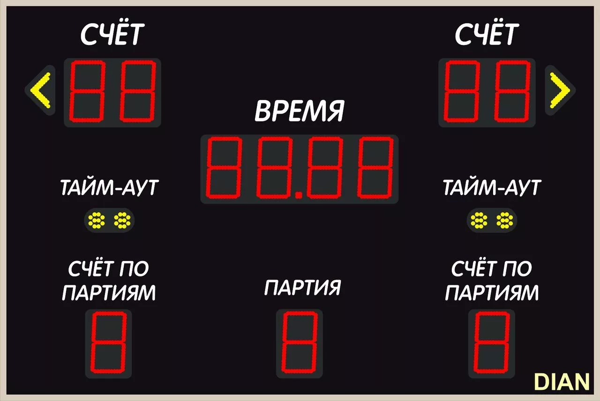
5. Сколько очков должна набрать команда для выигрыша?
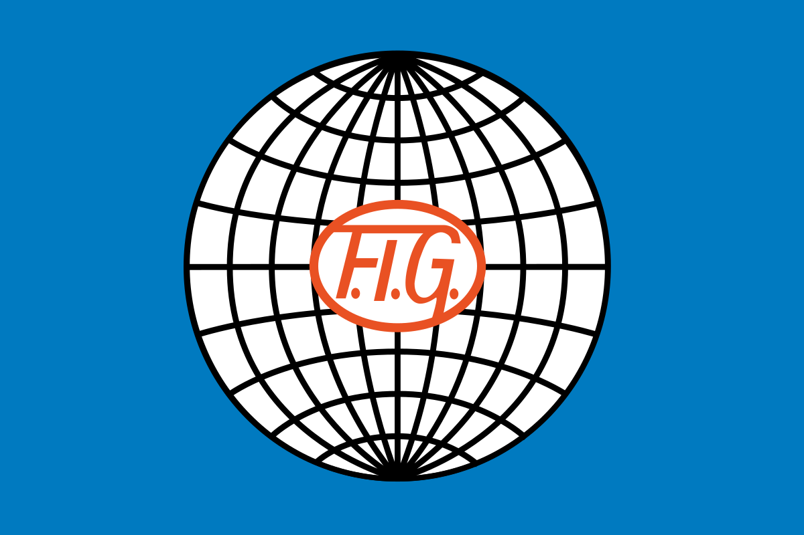
6. Год основания Международной федерации гимнастики?
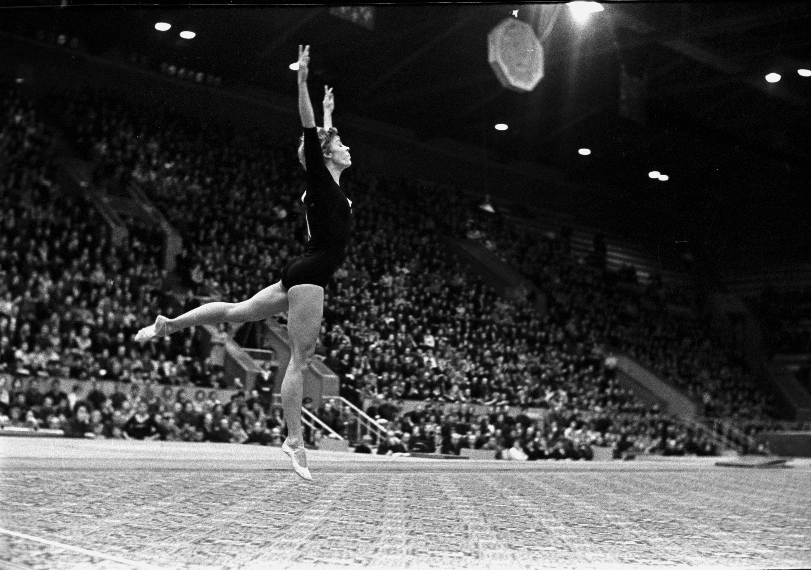
7. Назовите выдающуюся гимнастку, завоевавшую 18 олимпийских медалей, 9 из них - золотые
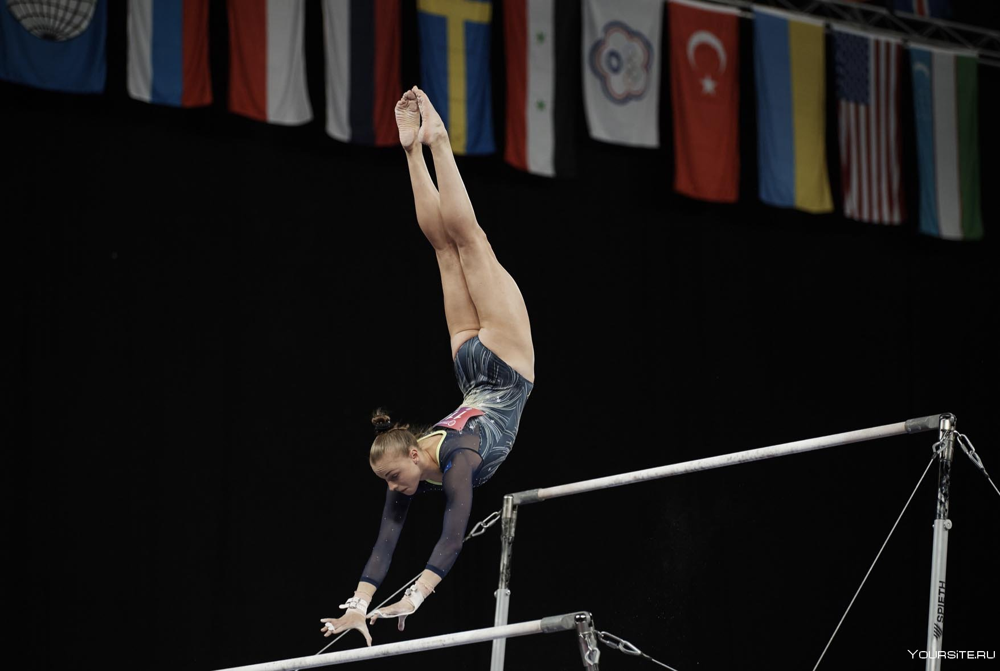
8. Что не входит в программу соревнований по спортивной гимнастике у женщин?
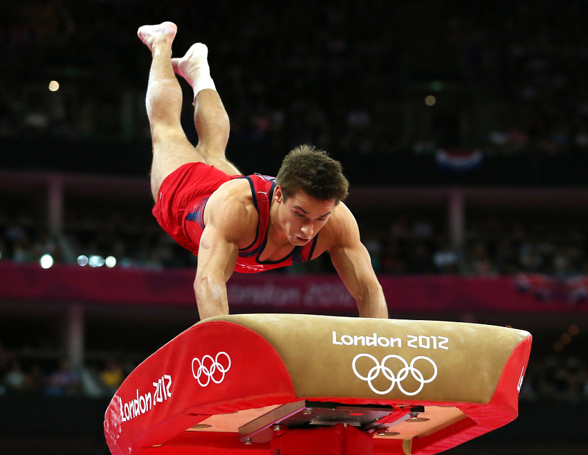
9. Сколько попыток дается участнику в опорных прыжках?
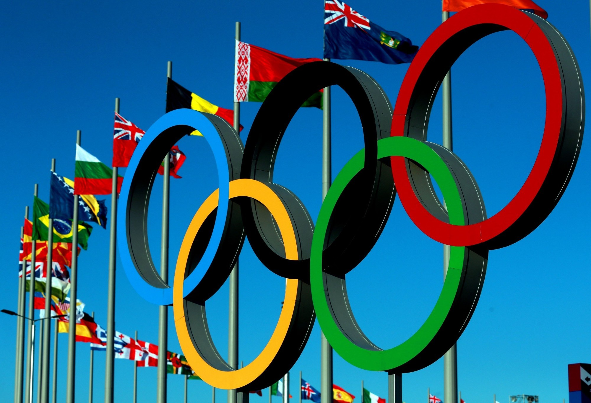
10. С какого года спортивная гимнастика входит в программу Олимпийских игр?
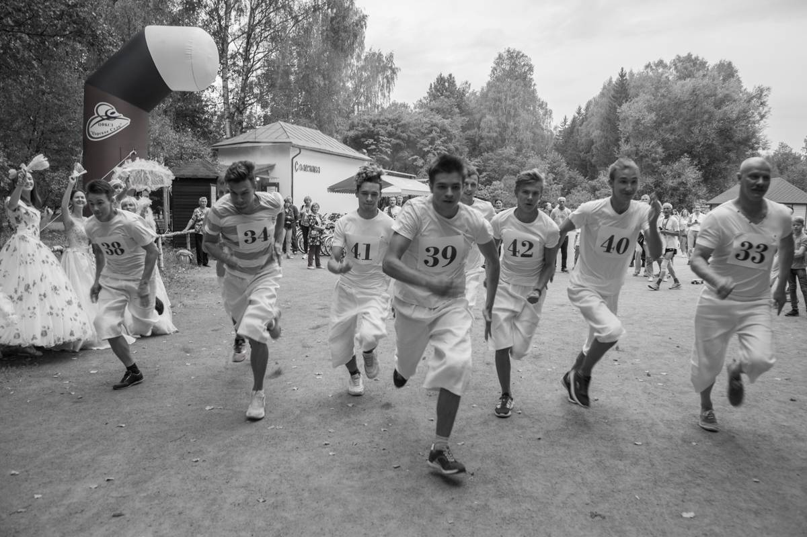
11. В каком году был создан первый кружок любителей бега под Петербургом?
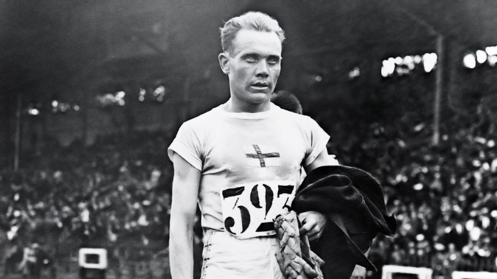
12. Кому из легкоатлетов был поставлен памятник при жизни на его родине?
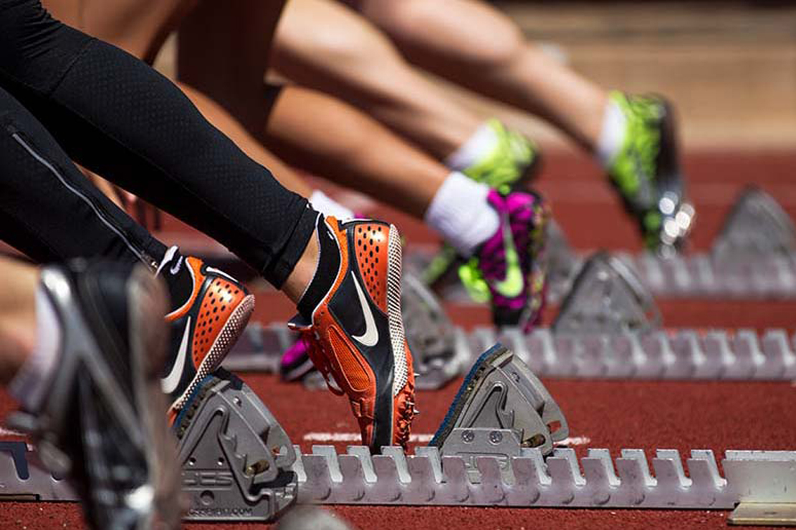
13. Сколько шипов должно быть на обуви легкоатлетов?
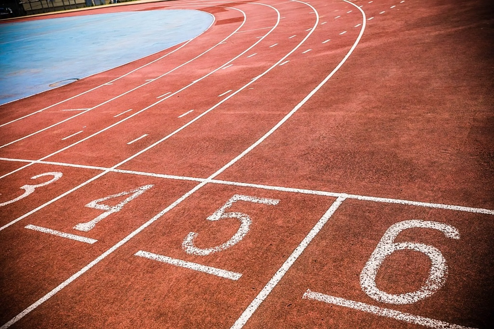
14. При какой физической деятельности нужно подкладывать под пятки резиновые прокладки?
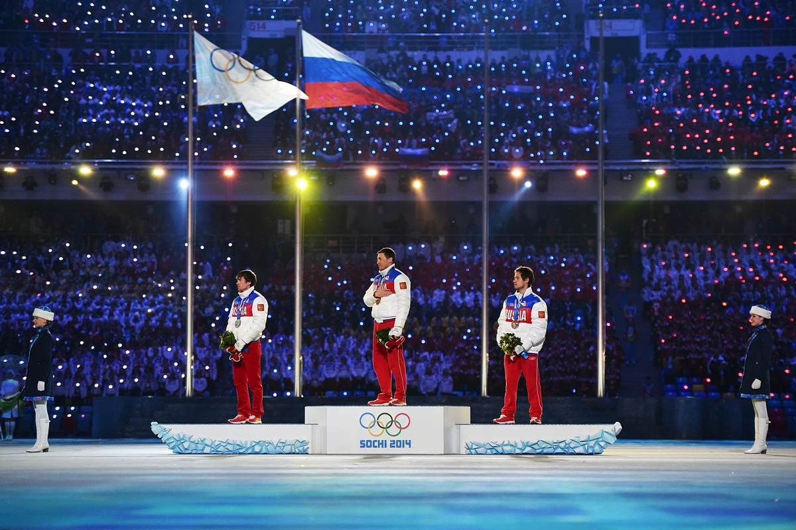